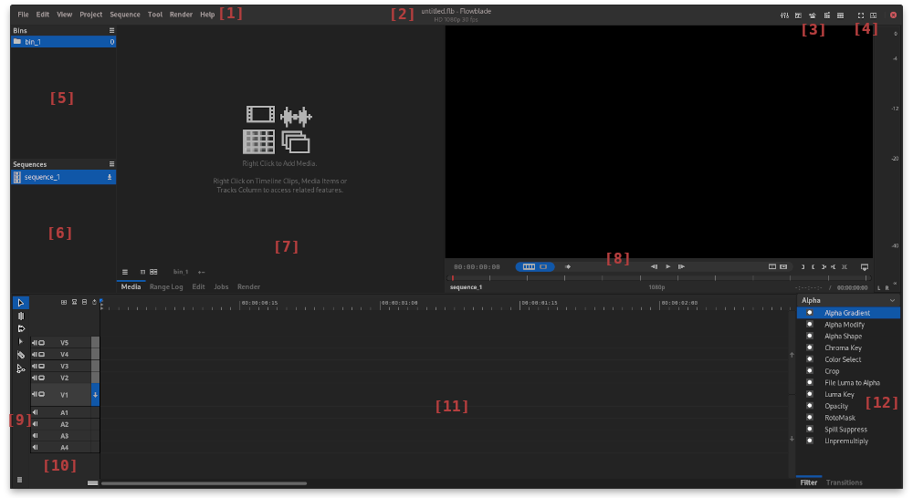
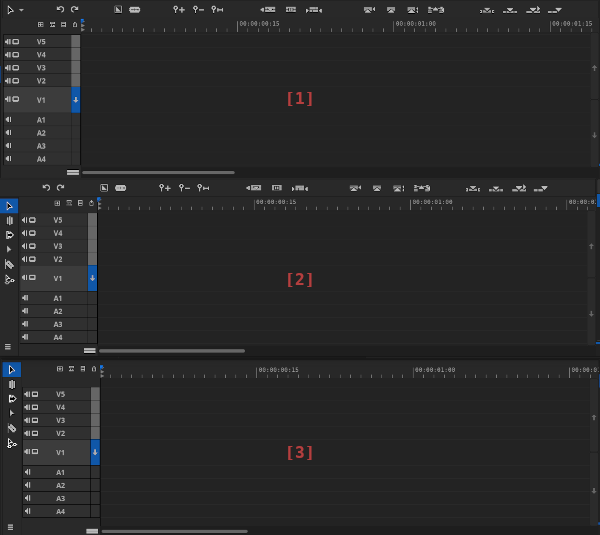

Main Window

[1] Application Menu.
[2] Project Name and Profile info See chapter Working with Projects.
[3] Tools buttons Buttons to open Audio Mixer, Titler, G'Mic Editor, Generator Script Editor, Batch Render Queue Application.
[4] Layouts and Fullscreen buttons See chapter Working with Layouts.
[5] Bins Panel List of Bins in the Project.
[6] Sequences Panel List of Sequences in the Project.
[7] Default Panels Area See below and chapter Working with Layouts.
[8] Monitor Area See chapter Monitor Controls, Seek and Playback.
[9] Tool Dock See below.
[10] Tracks Column See Using Timeline.
[11] Timeline See Using Timeline.
[12] Filters and Transitions Panels See chapters Filtering workflow and Dissolves, Wipes, Blends.
Panels
Floblade provides top level UI functionality in Panels. Panels can be moved to user selected posiotions, see chapter Working with Layouts.
Below is a list of available panels.
Project Panel
Project panel contains [5] Bins and [6] Sequences Panels. See chapters Adding Media and Bins and Sequences.
Media Panel
See chapter Adding Media and Bins.
Range Log Panel
See chapter Range Log,
Edit Panel
See chapters Filtering workflow and Dissolves, Wipes, Blends.
Jobs Panel
See chapter Render.
Render Panel
See chapter Rendering Sequences.
Filters Selection Panel
See chapter Filtering workflow.
Transitions Selection Panel
See chapter Dissolves, Wipes, Blends.
Middlebar and Tooldock

Flowblade provides three options for displaying Middlebar and Tooldock.
[1] Middlebar. Edit tools available via menu, edit actions available as Middlebbar buttons.
[2] Tooldock and Middlebar. Edit tools available via Tooldock, edit actions available as Middlebbar buttons and Tooldock menu items.
[3] Tooldock Only. Edit tools available via Tooldock, edit actions available as Tooldock menu items.
Configuring Middlebar and Tooldock
- Select View > Middlebar and Tooldock Configuration... from application menu.
- Use dropdown menu to select layout option: [1] Middlebar, [2] Tooldock and Middlebar or [3] Tooldock Only.
- Use checkboxes in Middlebar and Tooldock notebook pages to select available edit actions.